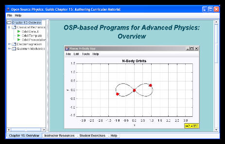
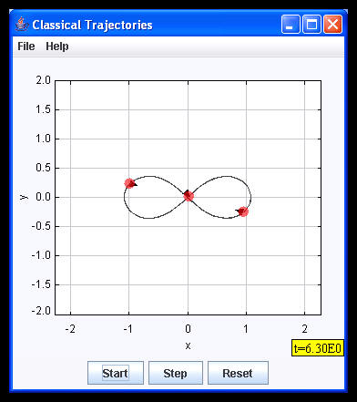

[Physics demo programs are packaged in the osp_demo.jar file on the OSP CD.]
The pane on the left is an Explorer pane (for navigation and organization), while the pane on the right is the Description pane. Note also there are tabs at the bottom of the Launcher window that can change what is displayed in the panes. These tabs often refer to a collections of materials we have developed as described in Chapter 15, "Authoring Curricular Material,” in the book Open Source Physics: A User’s Guide with Examples. [See W. Christian, Addison Wesley, 2007.]
The Overview tab gives an overview of the materials contained in this demo. The Instructor Resources tab gives an instructor’s view of the material. The Student Exercises tab shows the curricular material. The Help tab contains some help files associated with the programs used in this demo. For simplicity there are only three curricular units in this demo: classical orbits, radiation from point charges, and quantum-mechanical superpositions.
To launch a particular piece of curricular material, navigate to a launchable (executable) node, one with a green arrow. Double-click that arrow and a program will launch. For example, navigate to the Student Exercises tab, and open up (single-click) the Classical Mechanics folder. Open the 4- and 5-body Orbits folder and double-click the first orbit. You should see the figure below. Click the “Run” button to see this Montgomery-type orbit animated. To move on to something else, simply close this program, and select another node.
